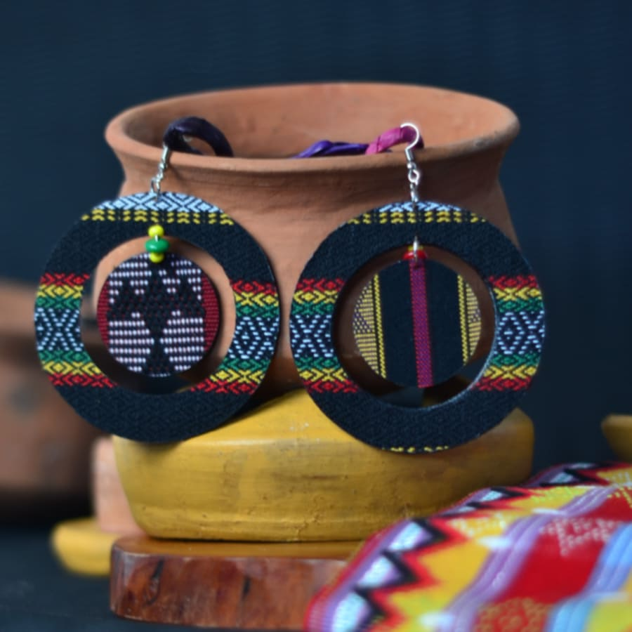
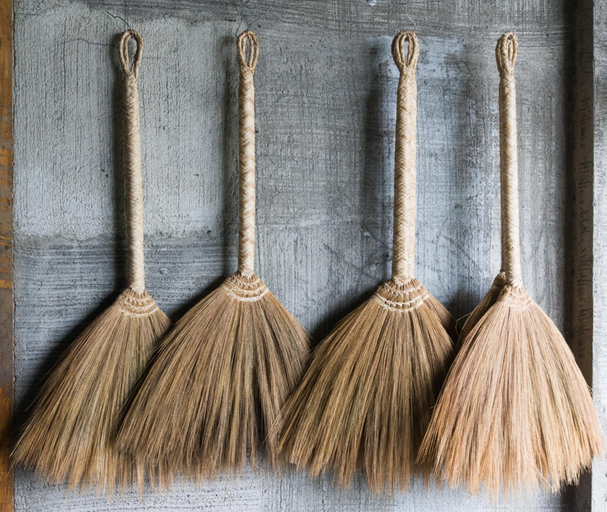
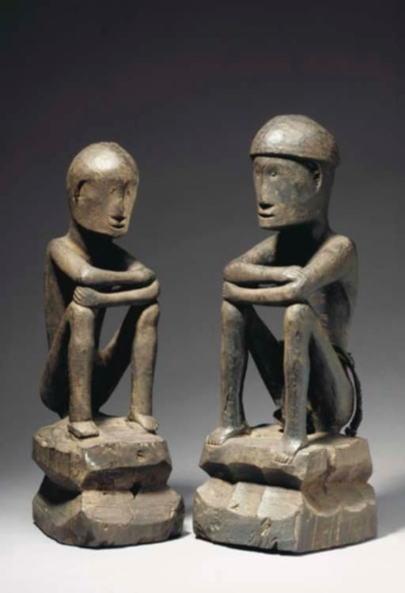
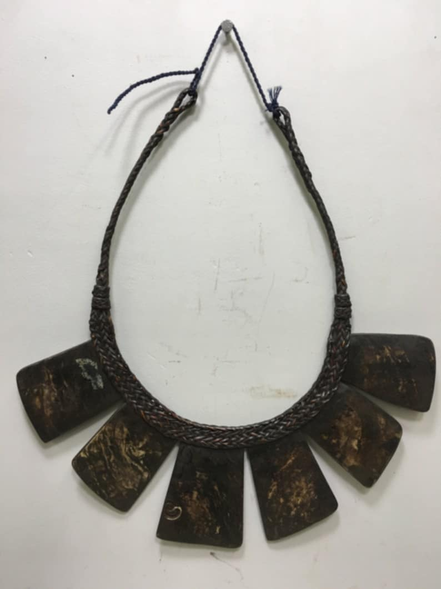
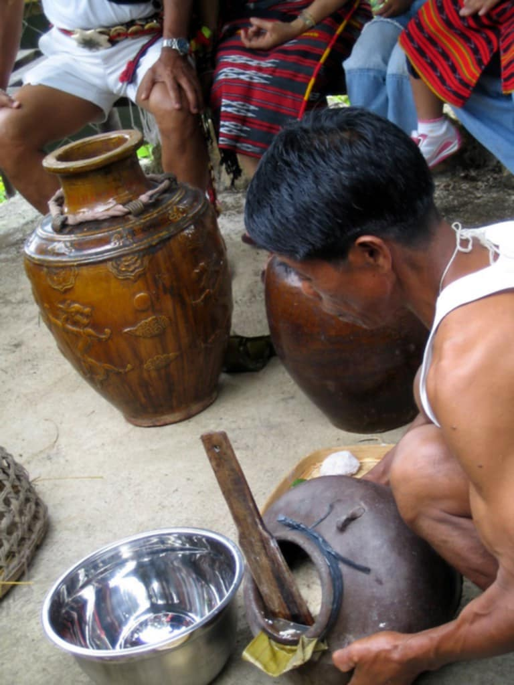
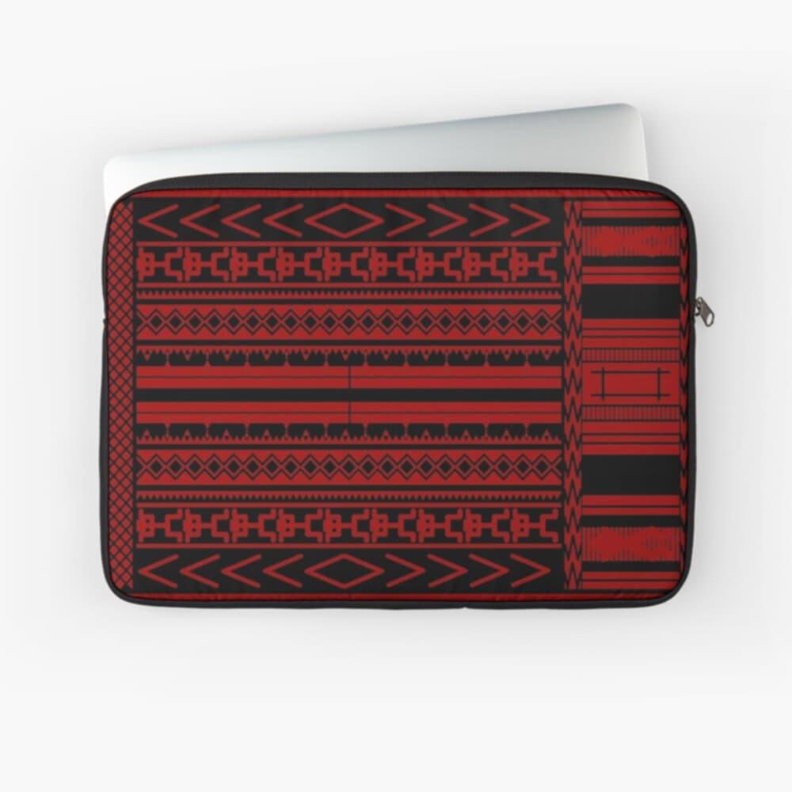
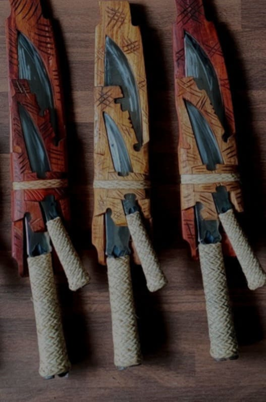
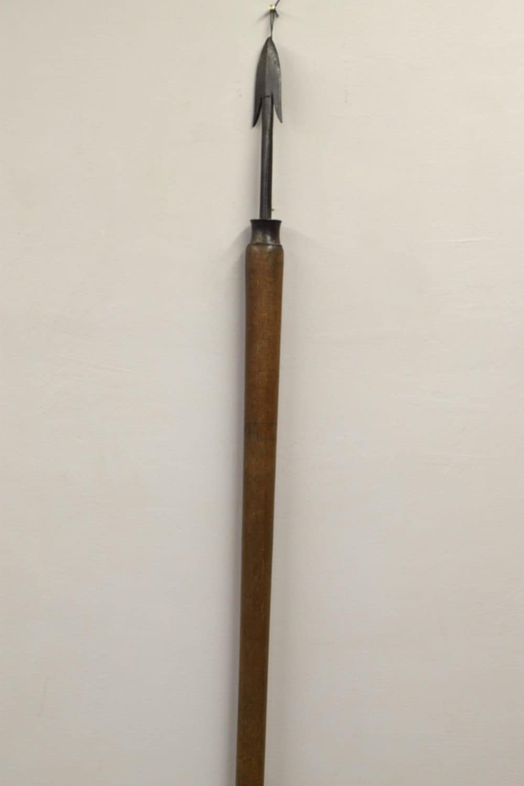
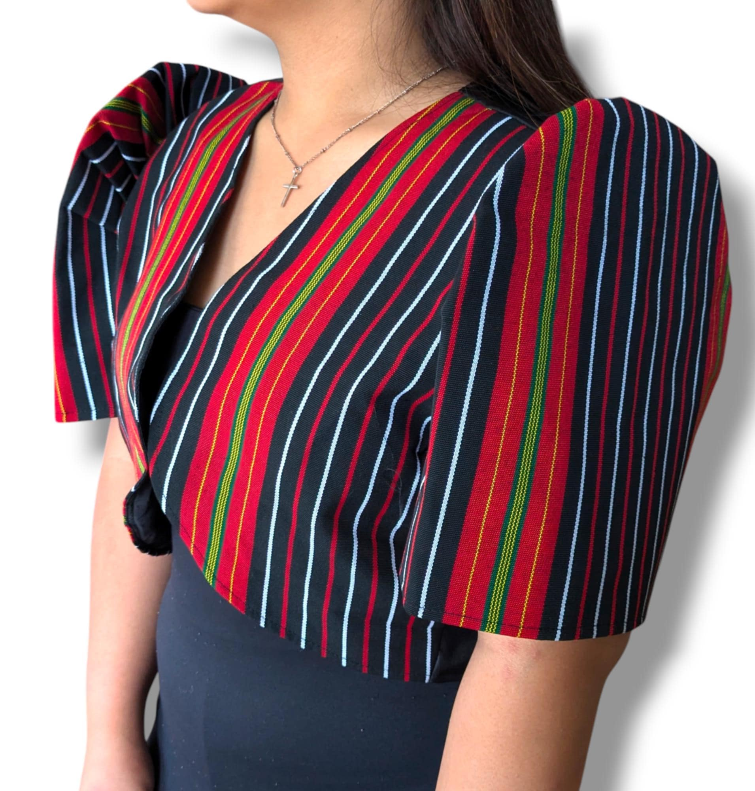
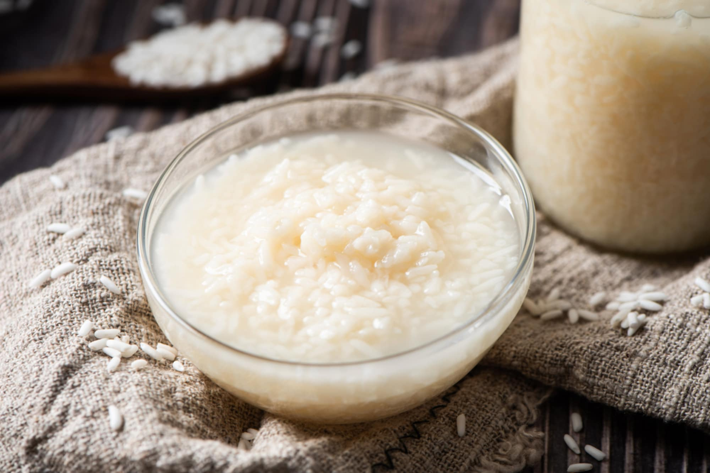

Banaue Rice Terraces
The Banaue Rice Terraces are an ancient, handcrafted agricultural system in mountains of Ifugao, Phillipines, built by the Igorot people over 2,000 years ago using minimal tools, mainly by hand.
Explore the rich history and breathtaking landscapes of the Ifugao.
The Banaue Rice Terraces are an ancient, handcrafted agricultural system in mountains of Ifugao, Phillipines, built by the Igorot people over 2,000 years ago using minimal tools, mainly by hand.

Tenogtog Falls is only a few minutes walk from the paved road. It has three layers with each layer having its own natural pool. The waters in these pools cascade to the other creating a beautiful succession. It is perfect for photography, picnics, and relaxation.

Itab Rolling Hills located in Aguinaldo, Ifugao, is a scenic landscape featuring lush, green, undulating hills that provide picturesque views of the surrounding mountains, valleys, and sometimes ifugao Rice Terraces.

₱10,000
This backpack would have been worn by a man on a long hunting journey. The backpack is worn so that it is sheltered between the pack and the man's back.

₱5,000
This basket is used for temporary storage for locusts. Locusts remain alive in this basket made of rattan until roasted and eaten.

₱250
These earrings are handcrafted using traditional weaving techniques and feature intricate patterns that are unique to the Ifugao culture.

₱350
Each broom is hand-tied with strong abaca threads, ensuring durability and a firm grip.

₱10,000
Bulul is a carved wooden figure, often representing ancestors and guardian spirits, that serves as a "rice god" to protect rice crops, granaries, and ensure a bountiful harvest.

₱11,000
This necklace is considered a traditional Ifugao wealth object, traditionally worn by both Ifugao men and women for ceremonial occasions.

₱1,000
Baya, is a rice wine made in the Ifugao province, is made from an indigenous variety of glutinous rice fermented using 'onwad'.

₱3,500
These laptop sleeves are handwoven by Ifugao artisans using traditional looms and indigenous patterns inspired by nature and heritage.

₱2,500
This bolo with an open sheath. The open sheath is made of a small board with the outline of the blade hollowed out.

₱8,000
This is for hunting larger animals. This is Ifugao tribal spear that would be a great addition to your collection as well as your home.

₱6,500
It has a modern touch with a front clasp and butterfly sleeves. It can be use, from weddings to cultural and even formal celebrations.

₱1,000
This kind of wine is basically made by soaking raw glutinous rice in hot water for 1 hour.